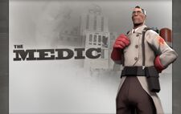
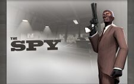
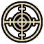
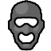

The Medic
- The Medic, as the name implies, specializes in healing teammates and is thus one of the most important classes to have on a team.
- Aside from simple healing, the Medic can also overheal targets past their maximum health, increasing their survivability.
- The Medic can use an Übercharge to grant powerful, temporary buffs to teammates such as invulnerability or triple damage.
- Well timed pushes with an Übercharge can instantly change the tide of a game, bringing a team back from defeat or crushing the other.
- Generally, the Medic has a hard time defending himself from attacking enemies, so he needs to be protected for maximum efficiency.

The Sniper
- The Sniper exceedes at picking of enemies from a distance, and is able to take out nearly any enemy with a single headshot.
- Due to his superior long range attacks, the Sniper is best positions away from the front lines, in a position with good visibility.
- The class is ideal for taking out high value enemies, such as Medics or Heavies, as they can do so without putting themself in too much harm.
- Enemy Snipers are one of the Sniper's greatest enemies, with a duel between then usually ending in a single blow from whoever can hit it first.
- Stationary Snipers are also an easy target for Spies, so watching out for suspicious activity or using the Razorback can help fight them off.

The Spy
- Similar to the Sniper, the Spy is perfect for eliminating valuable enemy targets, but does so through stealth and subterfuge.
- The Spy's main method of elimination is stabbing an enemy in the back with one of his knives, capable of instantly killing any target.
- Additionally, he has access to a Sapper for destroying enemy buildings, and a Revolver for ranged combat or finishing off low health enemies.
- In order to successfully get behind enemy lines, the Spy can disguise himself as an enemy to blend in and sneak around for an opportunity to kill.
- Acting like the class one has disguised as can help fool enemies, but some disguises such as Scouts throw off hitboxes, making the Spy harder to hit.
